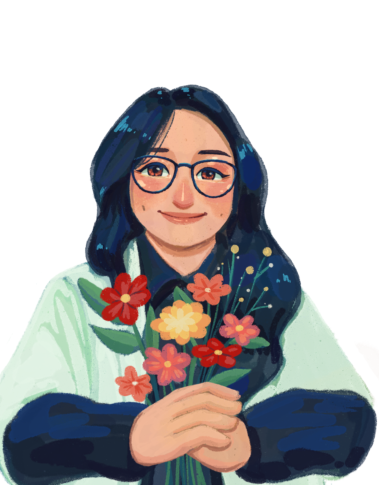

Soft sky
The background blends with the first scene so the page feels connected instead of cut off.
"Some beautiful journeys never end..."
Since we met
After you're mine
Created by
Rheza Agung

Second slide
The next section now uses your new artwork as its own background, anchored toward the bottom so the clouds and winding road stay visible when people scroll past the first slide.
The background blends with the first scene so the page feels connected instead of cut off.
The new image is positioned lower in the section, keeping the road and cloud details in view.
This section is now set up for extra memories, notes, photos, or the next chapter you add.